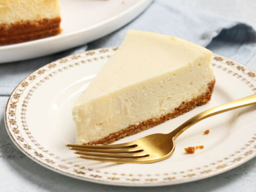

The Best Cheesecake Recipe

Vanilla Cheesecake
This decadent dessert is THE go to recipe for all cheesecake lovers.
It creates the perfect blend of creamy and savory taste you could imagine.
The below recipe is very simple and can be made by a novice baker!
Just follow the below steps and you will be in utter bliss before you know it!
- 4 packages cream cheese
- 4 large eggs
- 2 cups of graham cracker crumbs
- 1/2 cup melted butter
- 1 3/4 cup sugar
- 3 tbsp vanilla extract/maple syrup
- 1/8 tsp salt
Directions
- Preheat oven to 325°, while oven heats mix
together graham cracker,
butter and 1/4 cup sugar. Press along bottom
of springform pan.
- In separate bowl beat cream cheese
and 1 1/2 cup sugar until smooth
Next add vanilla and salt. Last
add eggs and beat until well blended.
Pour contents onto crust and
put onto baking sheet.
- Bake until center sets, 55-60 minutes.
Cool on wire rack for another
10 minutes. Remove from pan and
cool another hour.
Cover and refrigerate over
night after completely cooled.